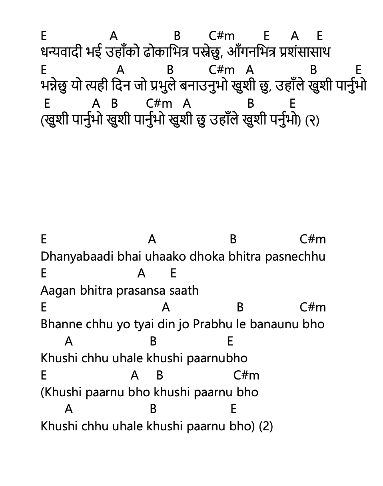

धन्यवादी भई उहाँको ढोकाभित्र – Dhanyabaadi Bhai Uhaako Dhoka Bhitra

नेपाली Lyrics (Copyable)
धन्यवादी भई उहाँको ढोकाभित्र पस्नेछु, आँगनभित्र प्रशंसासाथ
भन्नेछु यो त्यही दिन जो प्रभुले बनाउनुभो खुशी छु, उहाँले खुशी पार्नुभो
(खुशी पार्नुभो खुशी पार्नुभो खुशी छु उहाँले खुशी पर्नुभो) (२)